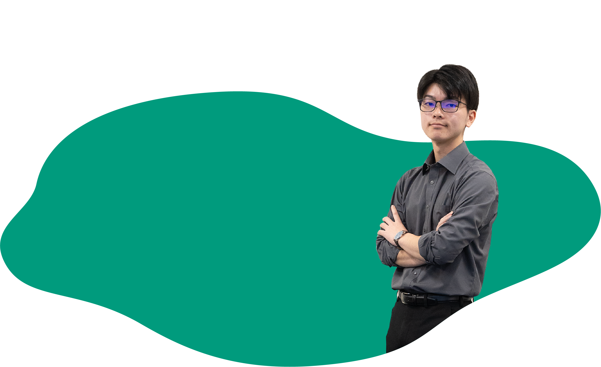

社長からのメッセージ
一人の天才より、
最高のチームが、いい仕事をする。
システム開発は、多くの人の発想力と技術力が結晶した"ものづくり"です。一人では決して完成しない。だからこそ、知恵を持ち寄り、支え合うチームの力が、仕事の質を決めます。
私たちが扱う銀行システムは、社会の経済活動を支える重要なインフラです。この大きな仕事は、商工中金というお客様と、社内の仲間たちとの深い信頼関係の上に成り立っています。「共に創る」——それが私たちの仕事の本質です。
IT技術は日進月歩。だからこそ、一人で抱え込まず、仲間と学び合い、お客様と対話しながら進化し続けるチームでありたい。皆さんの新しい感性を、ぜひこのチームに加えてください。
社長も新人も「さん付け」で呼び合う、風通しのよいチームがある。それが私たち商工中金情報システムです。
会社情報/「社長挨拶」もご覧ください→
先輩たちからのメッセージ
このチームで働く先輩たちが、就活生のあなたへ本音で語ります。

「誰と働くか」を大切に会社を選びました。日本中の中小企業が使う銀行システムという大きな仕事も、信頼できる仲間とだから向き合えます。チームで大きなことを成し遂げたい人と、一緒に働きたいです。
入社1年目、わからないことだらけでしたが、質問すれば先輩が必ず手を止めて教えてくれる。この「教え合う文化」があるから、安心して成長できます。仲間と支え合いながら伸びていきたい人に、ぴったりの環境です。


「Salesforceの導入は、お客様との対話から始まる」。技術だけでなく、相手の業務を深く理解し、共に答えを創る。それがこの仕事の醍醐味です。
「クラウド基盤の構築は、チーム戦」。IT未経験の私が6ヶ月の研修を経て戦力になれたのは、隣で支えてくれる仲間がいたから。今度は私が支える番です。

※実サイトでは6名の先輩社員メッセージが掲載されていますが、本モックアップで実文言を確認できたのは2名分のみです。残り2名分は社員インタビューの一言コメントを転用しています（既知のデータギャップ）。